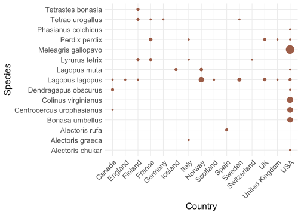

Experimental harvest of ptarmigan, black grouse and capercaillie:
Summary of planning stage
Erlend B. Nilsen , Lasse F. Eriksen , Christoffer Høyvik Hilde , Matthew Grainger
Siteres som:
Nilsen, E.B., Eriksen, L.F., Høyvik Hilde, C., Grainger, M.J. 2025. Experimental harvest of ptarmigan, black grouse and capercaillie: Summary of planning stage NINA Rapport 1234. Norsk institutt for naturforskning. http://hdl.handle.net/11250/fås av bibliotek
Kvalitetsgranskere: xx
Ansvarlig signatur: Forskningssjef [fylles ut av forskningssjefen] (sign.)
Sammendrag
Tekst inn her, et kort resymé av innholdet. Teksten i sammendraget er søkbar i databaser og på nett, og er viktig for at rapporten skal fanges opp ved søk.
Seksjoner og tomme rader mellom dem er litt tricky å få til i YAML-avsnittet, men det kan gjøres slik. Tomme rader i forordet kan også lages på samme måte.
Abstract
Tekst inn her, et kort resymé av innholdet. Teksten i sammendraget er søkbar i databaser og på nett, og er viktig for at rapporten skal fanges opp ved søk.
1 Introduction
Evidence based management of wildlife resources is an overarching goal in wildlife management (refs)….
In Norway, three major research projects related to willow ptarmigan hunting have been carried out in the last 30 years (respectively the “Grouse hunting project” in 1995-1999, the “Grouse management project” in 2006-2011, and “Sustainable small game management” in 2014-2017). These have produced considerable knowledge that contributes to a more sustainable management of our most important small game resource. In addition, international research in the field, with a significant element of research carried out in Norway, has moved the research front forward. Nevertheless, there are still significant uncertainties related to how to ensure a sustainable management system in a future scenario where human activity and ongoing climate change affect mountain ecosystems to a significant extent.
Today’s grouse research rests on solid experimental studies of the importance of hunting, but it is not a given that the levels for sustainable harvesting that were documented in the earlier studies will also apply to future grouse populations, as these will be influenced by a different climate and changed trophic interactions. As part of an adaptive management, it will be of great importance to carry out a conceptual replication of the classic hunting experiments that were carried out in Norway under the auspices of the “Grouse hunting project” in the late 1990s. However, before such a larger empirical study is carried out, it will be a prerequisite that an up-to-date knowledge overview of the research-based literature on the sustainable management of grouse from a climate perspective is prepared, as well as that a thorough evaluation of how best to design such an experimental study is carried out.
In this report, we will present the results from the planning stage of the project. It includes two main sections:
A systematic mapping of the literature related to effects of harvest on galliformes
A thorough evaluation of the experimental design including both the sampling of study subjects and assignment of treatment levels.
We will first present the results from the systematic mapping of the literature, and then the evaluation of experimental design. In the final chapter, we will present a detailed description of the suggested design for the new harvest experiment.
2 Systematic mapping of the literature
This systematic map is produced as part of the preparation of a large-scale harvest experiment in Norway outlined above. The protocol was prepared prior to conducting the search. Here, we include the relevant information and report any deviation from the protocol.
2.1 Objective of the review and research question
The main objective of this review is to map the available literature on effects of managed harvest/hunting on species of the order Galliformes.
2.2 Methods
2.2.1 Search for articles
We used a PIO (Population, Intervention, Outcome) question structure to help develop the search strategy.
Population (P): Bird species within the order Galliformes
Intervention (I): Legal (managed) hunting or harvest
Outcome (O): The ecological impacts of (managed) hunting on population dynamics, demography, genetics or behaviours
We searched for academic literature (publications) in two search platforms; Web of Science and lens.org. Specifically, we will search the Web of Science Core Collection (WOS.SCI: 1987 to 2025, WOS.AHCI: 1987 to 2025, WOS.ESCI: 2020 to 2025 and WOS.SSCI: 1987 to 2025) using the NINA library subscription using the following search string:
((TS=(galliform* OR grouse OR ptarmigan OR Phasianidae OR pheasant OR “lagopus lagopus” OR “lagopus muta” OR “wild turkey” OR “bobwhite” OR partridge))
AND (TS=(“hunt” OR “harvest”)))
AND SU=(“Ecology” OR “Wildlife” OR “Environment”)
For lens.org we will use the following search string:
(abstract:(“galliform” OR “grouse” OR “ptarmigan” OR “Phasianidae” OR “pheasant” OR “lagopus lagopus” OR “lagopus mura” OR “wild turkey” OR “bobwhite” OR “partridge”) OR title:(“galliform” OR “grouse” OR “ptarmigan” OR “Phasianidae” OR “pheasant” OR “lagopus lagopus” OR “lagopus muta” OR “wild turkey” OR “bobwhite” OR “partridge”)) AND abstract:(“hunt” OR “harvest”) OR title:(“hunt” OR “harvest”) AND field_of_study:(“Ecology” OR “Wildlife” OR “Environment”)
In addition, a backward and forward citation chasing (using CitationChaser) was performed based on the three first benchmark papers listed below (Sandercock et al. 2011; Pedersen et al. 2004; Sedinger & Rotella 2005).
2.2.2 Benchmark papers
The following benchmark papers was used to assess the effectiveness of the search string. We expected to find all these papers in a review of this question. We recorded if each benchmark paper is found in the searches (WoS and lens.org).
Sandercock, B. K., E. B. Nilsen, H. Brøseth, and H. C. Pedersen. 2011. Is hunting mortality additive or compensatory to natural mortality? Effects of experimental harvest on the survival and cause-specific mortality of willow ptarmigan. Journal of Animal Ecology 80:244-258.
Pedersen, H. C., H. Steen, L. Kastdalen, H. Brøseth, R. A. Ims, W. Svendsen, and N. G. Yoccoz. 2004. Weak compensation of harvest despite strong density-dependent growth in willow ptarmigan. Proceedings of the Royal Society of London Series B-Biological Sciences 271:381-385.
Sedinger, J.S. & Rotella, J.J. 2005. Effect of harvest on sage-grouse Centrocercus urophasianus populations: what can we learn from the current data? Wildlife Biology, 11, 371–375.
Pedersen, Å. Ø., E. M. Soininen, S. Unander, M. H. Willebrand, and E. Fuglei. 2014. Experimental harvest reveals the importance of territoriality in limiting the breeding population of Svalbard rock ptarmigan. European Journal of Wildlife Research 60:201-212.
Brøseth, H., J. Tufto, H. C. Pedersen, H. Steen, and L. Kastdalen. 2005. Dispersal patterns in a harvested willow ptarmigan population. Journal of Applied Ecology 42:453-459.
Brøseth, H., E. B. Nilsen, and H. C. Pedersen. 2012. Temporal quota corrections based on timing of harvest in a small game species. European Journal of Wildlife Research 58:797-802.
Brøseth, H., and H. C. Pedersen. 2000. Hunting effort and game vulnerability studies on a small scale: a new technique combining radio-telemetry, GPS and GIS. Journal of Applied Ecology 37:182-190.
Henden, J.-A., R. A. Ims, N. G. Yoccoz, E. J. Asbjørnsen, A. Stien, J. P. Mellard, T. Tveraa, F. Marolla, and J. U. Jepsen. 2020. End-user involvement to improve predictions and management of populations with complex dynamics and multiple drivers. Ecological Applications n/a:e02120.
Small, R.J., Holzwart, J.C. & Rusch, D.H. 1991. Predation and hunting mortality of ruffed grouse in central Wisconsin. Journal of Wildlife Management, 55, 512–520.
In our searches, all benchmark papers were found except…. XXX, which was not indexed by any of the databases that we searched. Overall, this is found to be satisfactory.
2.3 Article screening
We used pre-determined inclusion/exclusion criteria when screening eligible studies. Excluded papers will be shown in a flowchart using the ROSES flow chart (Haddaway et al. 2018). Included studies was de-duplicated based on DOI and title matches using the deduplication tool in Rayyan.
After de-duplication, title and abstract screening was done using the eligibility criteria. If uncertainty remained, the full text version was visited to confirm/reject. The screening was done using Rayyan. A set of 54 papers was reviewed by three members of the review team to ensure consistency.
2.3.1 Eligibility criteria
We reviewed scientific articles from all parts of the world. We included papers covering all galliform species. Studies of both native and introduced populations were eligible. Studies of all spatial scales and across all relevant ecosystems were considered eligible. Only studies documenting the effects of legal and/or managed harvest on galliform populations were eligible. Studies of poaching were not eligible. The effects must be assessed quantitatively for the study to be eligible. Eligible outcomes included effects of harvest on population abundance, density, sex- and age structure, recruitment, survival, behaviour, genetic, physiology and distribution. Studies focusing on lead (or heavy metal) poisoning or content in wild birds from shooting were not eligible. Both observational and experimental study designs are eligible. Mathematical simulation studies are eligible.
2.3.2 Title and abstract screening stage
We used a decision tree to make decisions about inclusion and exclusion at the Title and Abstract stage. The tree is presented in the protocol and in the Appendix to this report. The decision tree helped the reviewers to make decisions about eligibility of each paper in a structured way.
2.3.3 Full text eligibility
Papers included at the Title and Abstract stage was taken forward to the full text screening stage. A RIS file of included articles was downloaded from Rayyan and added to a Zotero database. PDF versions of each paper was searched using Zotero’s “Find Available PDF” tool, ResearchGate, Google Scholar and Google. If a PDF was not available online (or was not open to us), the paper was excluded at this stage of the review. Full text papers was excluded if they are/did not:
- Written in English, Norwegian, Swedish or Danish
- Focus on species from order Galliformes
- Document the effect of legal or managed hunting on Galliformes
- Assess the effect of hunting quantitatively
2.3.4 Data coding
From all papers that met the eligibility criteria, we extracted key variables (aka “data coding”). In addition to metadata about the publication (publication year, journal name etc) we extracted from the full-text information about study species, study area location and extent, research approach and experimental design, outcome variables and to which extent the paper reported harvest rates and to which extent the study assessed whether harvest was additive or compensatory. For outcome variables, we used the Essential Biodiversity Variable (EBV) framework (refs), and coded both for EBV class (high order classification) and EBV name (lower order classification). A detailed description of data coding is presented in the protocol and in the Appendix.
2.4 Results from the literature review
Our searches returned 1023 articles in total, with 542 from Web of Science, 112 from lens.org, 9 benchmark articles and 192 from backward-, and 168 from forward citation chasing from the three benchmark articles mentioned above (Pedersen et al. 2004; Sedinger and Rotella 2004; Sandercock et al. 2011). Of these 173 were duplicates which were removed from the database. We screened the remaining 850 articles for eligibility at the Abstract and Title stage. Of the 850 included articles, a total of 200 were moved further to full-text screening, of which 166 papers that had a “include” decision and 34 a “maybe” decision. There were 9 conflicts (where reviewers disagreed on eligibility). All these papers were taken through to the fulltext stage and assessed for eligibility. Exclusion decisions (650 articles) were due to the research not focusing on the effects of legal or managed hunting (365), not being focused on Galliformes (276), not quantitative (23), abstract not found online (16), or abstract not available in English, Norwegian, Swedish or Danish (3).
At the fulltext stage 90 articles were excluded (3 with no available pdf, 6 not focused on Galliformes, 12 not assessing the effects of hunting quantitatively and the rest, 61, not documenting the effects of legal harvest). This left 129 papers that went forward to the data extraction stage.
-01.png)
Legal hunting of Galliformes has been the subject to extensive reserach. In our searches we identified studies published as far back as 1963, but we are aware that research on this topic was carried out even before that but was not covered by our serarches. The number of studies per year peaked in 2020 (8 studies per year) and the long-term average was 2.93 studies per year (Figur 1).
The most common geographic location for studies was in the USA (99 studies), followed by Norway (16) and the UK (9) (Figur 2). In the USA studies were carried out in 33 States (Alaska, California, Colorado, Florida, Georgia, Idaho, Illinois, Indiana, Kansas, Kentucky, Louisiana, Maine, Michigan, Mississippi, Missouri, Montana, Nevada, New York, North Carolina, Ohio, Oklahoma, Oregon, Pennsylvania, Poland, Rhode Island, South Carolina, South Dakota, Tennessee, Texas,Utah,Virginia, West Virginia, Wisconsin).

The extent of the study areas were predominately regional or local, with very few studies at the site level (Figur 3). Few studies were of “national” or multinational scale. Note that following our definition used here, regional studies typically cover one mountain area or a county, whereas a local study would cover a municipality or parts of a municipality. Note that this contrasts previous calls for more large-scale research (Estes et al. 2018) that might be need to uncover the ecological dynamics and provide input to management and natural resource management policy at larger spatial scales.

Most studies covered in our mapping were observational (106 studies), but there were also a substantial number of studies that relied on simulations or scenario analysis (35 records; Figur 4 a)). Note that the sum of observatinal studies based on empirical data and studies based on simulations is higher than the total of 129 papers that were found eligible. This is because some studies used both research approaches and thus were included in both categories. In agreement with previous assessment of study designs in ecological research (refs) most of the studies that presented empirical data were based on simple (and less robust) study designs (Figur 4 b)). There were only 6 papers using a “Randomized Controlled Trial (RCT)” approach, the study design that leads to the highest level of evidence for causal understanding (Christie et al. 2019) and these were limited to Norway (5) and the USA (1). The Norwegian articles are all from the same research project/experiment conducted in the late 1990-ties.

We also extracted information about to which extent harvest rates (or percentage of the population removed by harvest) were reported in 71 papers. The remaining papers did not explicitly report such information (Figur 5 a)). Moreover, among the papers that reported harvest rate or harvest mortality, only 27 made any assessment to which extent harvest was additive or not (Figur 5 b)). Note however that this is somewhat ambiguous, and it might depend on how the concept of additivity is defined: although we did not quantify this by direct coding we note that much fewer studies were in fact able to properly document additivity vs compensation via a robust quantitative approach (see also discussion in ref).

From each of the eligible studies we assessed which outcome variables were examined (Figur 6), at two different levels (EBV class and EBV names, respectively). In general, there were about equal number of studies focusing on “Species traits” (67 records) and “Species populations” (60 records). Note that we did not record this variable for simulation based studies. Separating the EBV classes into EBV names, we found that the most commonly studies outcome variable was “Survival” (67 records), followed by “Population density/abundance/growth*” (47 records). In addition, several studies focused on effects of “Movement rates” or “Habitat use/selection” (12 and 6 records, respectively), and 11 papers reported effects of harvest on “Sex- and age-structure”.

Among studies that were based on (mathematical or statistical) simulations, the most common approach was to compare different harvest strategies (22 records), followed by conducting population viability analysis (17 records) and various forms of sensitivity analysis (13 records). In total, 11 studies were aiming to estimate/calculate maximum sustainable yield. Note that many studies used several of these approaches, so that the combined numbers will be higher than the total of 35 papers that included simulations or scenario analysis.

The number of studies were very unequal among species (Figur 8): The most frequently studied species were wild turkeys (Meleagris gallopavo; 33 records), followed by willow ptarmigan/grouse (Lagopus lagopus; 28 records), bobwhite (Colinus virginianus; 18 records) and sage grouse (Centrocercus urophasianus; 18 records). The remaining 11 species that were represented among the eligible papers each had less than 10 papers. Both capercaillie (Tetrao urogallus; 4 records) and black grouse (Lyrurus tetrix; 6 records) are among these poorly studied species.


Different species were also subject to research focusing on different outcome variables (Figur 10). [More text…]


3 Experimental design
BOX: Glossary of terms
General terms
Outcome variable: This is the variable of interest, the one to draw inference about. Defining the outcome is part of the planning of an experiment. In our harvest experiment, the outcome variables of interest include the effects of experimental harvest on i) survival and ii) population growth.
Study population: The population we will draw inference about. In strict terms, this is the willow ptarmigan population within the geographical boundaries of our study. Assuming that the willow ptarmigan population in our study area respond in a similar way to harvest mortality as other populations, we can make predictions about how the response will be in other areas. By including covariates that affect the outcome (response to harvest) these predictions could be made more accurate and less biased.
Statistical population: A statistical population is the set of subjects that we sample from and make inference from. In our case, the statistical population is the harvest areas that are included within the study area. One subject in the statistical population from which we draw some measurement is typically named a statistical unit or a sampling unit.
Sampling frame: The sampling frame is the “collection” of all study subjects that are available for inclusion / sampling. A structured way of thinking about this is to think of a regular grid covering the whole study area. However, in our case the grid is not regular but consists of harvest areas of different sizes. In addition, we will have to make other adjustments to the sampling frame: i) only areas with “sufficient” line transect survey data are available for inclusion, and ii) only areas larger than a cut-off size. These adjustments and their consequences should be considered before we make the final decision, as they can induce bias (see below).
Blocked study design: In blocked designs, the study units are grouped (blocked) by some characteristics. In a randomized block design, the treatment level is randomly assigned within the blocks. A block design typically means that the sample size must be larger in order to obtain the same statistical power as in non-blocked designs.
Internal and external validity: The term internal validity refers to which extent the inference drawn from the sample, e.g. in terms of cause-effect relationships are true for the sample itself. The term external validity relates to which extent one can generalize from the current sample to the larger population that we usually want to make statements about. While the former in large-part is determined by the robustness of the methods and how treatment levels are assigned etc, the latter is in large-part determined by the sampling design and to which extent the included units are representative for the population.
Recruitment/inclusion of study subjects
The rules or algorithms chosen when recruiting / including study subjects. Since we cannot usually measure all subjects in the population, this usually involves some form of probabilistic or non-probabilistic sampling. Should be constructed to minimize the potential for biased estimates of inference. For instance, if all included subjects share a common characteristic that is not shared with other members of the statistical population, then the results might be biased. This is termed selection bias. Selection bias occurs whenever the subjects that are included in the study systematically deviate from the study population. Note that selection bias might also apply when assigning treatment level to a study unit in an experiment (covered below).
Probabilistic sampling to recruit study subjects: This involves using recruiting units into the study by some sort of random (probabilistic) sampling. In the basic form (i.e. random sampling), all units have the same probability of being recruited. In stratified random sampling, the units are sorted along one or more covariates to ensure all values along the covariate are represented with a certain proportion in the sample. Under proportional stratification, all “strata” are represented with a proportion that is similar to their proportion in the statistical population. Under balanced stratification, the number of recruited units are balanced (e.g. similar) across strata. Under restricted random sampling, the initial sampling might be random but it is combined with rules that make the next decisions non-probabilistic. Examples include “do not include units that are located next to each other” etc. Another sampling strategy that combines probabilistic and non-probabilistic sampling is systematic sampling when the selection of the first unit is decided by a random draw.
Non-probabilistic selection to recruit study subjects: These approaches include methods that use non-probabilistic criteria to select study subjects. Such criteria could include geography, certain characteristics (i.e - placement along a covariate axis but with no random selection – as opposed to stratified random sampling) and expert knowledge. A very specific type of non-probabilistic selection is convenience sampling where the units that for some reason are “easiest” to include are selected. One method that further resembles “stratified random sampling” is what is often termed proportional quota sampling in the medical literature. Here, the number of units that are included are proportional to the size of the strata, but the selection of units to include are not done at random. In cases when the total size of the population from which to draw sampling units from is unknown, this method will be known as non-proportional quota sampling. Finally, purposive sampling is a rather broad class of approaches where each study unit is recruited into the study based on one or more specific characteristics. In strict terms, a non-probabilistic selection of study subjects does not rely on a sampling frame.
Assignment of treatment level to each study unit
In manipulative experiments, there also need to be rules for assigning treatment level to the study subjects. This can be done by random assignment or non-random (quasi random) assignment. Under random assignment of experimental treatment level the treatment level (or control vs treatment) is randomly assigned to each unit. This is efficient in terms of assuring internal validity, as there will be no confounding effects from covariates. In blocked designs, treatment levels are randomly assigned within blocks. In a crossover study or trial, each study subject obtains a series of treatments allocated at random. In most cases, the study is designed so that all included subjects receive all treatments in a random order. This will result in a balanced study design, where the number of observations for each treatment are the same. This is in contrast to parallel studies or non-crossover studies where each unit is exposed to only one treatment level. For heterogenous samples, one advantage (depending on the analyses methods) is that each study subject can serve as their own control.
3.1 Supplementary Information
| author | title | year | source | doi |
|---|---|---|---|---|
| Åhlen, PA and Willebrand, T and Sjöberg, K and Hörnell-Willebrand, M | Survival of female capercaillie <i>Tetrao urogallus</i> in northern Sweden | 2013 | WILDLIFE BIOLOGY | 10.2981/13-025 WE - Science Citation Index Expanded (SCI-EXPANDED) |
| Aanes, Sondre and Engen, Steinar and Saether, Bernt-Erik and Willebrand, Tomas and Marcstrom, Vidar | Sustainable Harvesting Strategies of Willow Ptarmigan in a Fluctuating Environment | 2002 | Ecological Applications | 10.2307/3061152 |
| Sands, Joseph P and DeMaso, Stephen J and Hernández, Fidel and Brennan, Leonard A. and Schnupp, Matthew J. and Teinert, Trent W. and Rollins, Dale and Perez, Robert M | A Simulation Model of Sustained-Yield Harvest for Northern Bobwhite in South Texas | 2022 | National Quail Symposium Proceedings | 10.7290/nqsp09sgeq |
| Sedinger, James S.; White, Gary C.; Espinosa, Shawn P.; Partee, Ed T.; Braun, Clait E. | Assessing Compensatory Versus Additive Harvest Mortality: An Example Using Greater Sage-Grouse | 2010 | The Journal of Wildlife Management | 10.2193/2009-071 |
| Brøseth, Henrik; Tufto, Jarle; Pedersen, Hans Chr.; Steen, Harald; Kastdalen, Leif | Dispersal patterns in a harvested willow ptarmigan population | 2005 | Journal of Applied Ecology | 10.1111/j.1365-2664.2005.01031.x |
| Pack, James C.; Norman, Gary W.; Taylor, Curtis I.; Steffen, David E.; Swanson, David A.; Pollock... | Effects of Fall Hunting on Wild Turkey Populations in Virginia and West Virginia | 1999 | The Journal of Wildlife Management | 10.2307/3802811 |
| Israelsen, Markus Fjellstad; Eriksen, Lasse Frost; Moa, Pål Fossland; Hagen, Bjørn-Roar; Nilsen, ... | Survival and cause-specific mortality of harvested willow ptarmigan (Lagopus lagopus) in central Norway | 2020 | Ecology and evolution | 10.1002/ece3.6754 |
| Brøseth, Henrik; Pedersen, Hans Chr. | Hunting effort and game vulnerability studies on a small scale: a new technique combining radio-telemetry, GPS and GIS | 2000 | Journal of Applied Ecology | 10.1046/j.1365-2664.2000.00477.x |
| Rolland, Virginie; Hostetler, Jeffrey A.; Hines, Tommy C.; Percival, H. Franklin; Oli, Madan K. | Impact of harvest on survival of a heavily hunted game bird population | 2010 | Wildlife Research | 10.1071/wr09177 |
| Bunnefeld, Nils; Reuman, Daniel C.; Baines, David; Milner-Gulland, E. J. | Impact of unintentional selective harvesting on the population dynamics of red grouse | 2011 | The Journal of animal ecology | 10.1111/j.1365-2656.2011.01862.x |
| Bergerud, Arthur T. | Changes in the Vulnerability of Ptarmigan to Hunting in Newfoundland | 1972 | The Journal of Wildlife Management | 10.2307/3799193 |
| Besnard, Aurélien; Novoa, Claude; Gimenez, Olivier | Hunting impact on the population dynamics of Pyrenean grey partridge Perdix perdix hispaniensis | 2010 | Wildlife Biology | 10.2981/08-077 |
| DeStefano, Stephen; Rusch, Donald H. | Harvest Rates of Ruffed Grouse in Northeastern Wisconsin | 1986 | The Journal of Wildlife Management | 10.2307/3801087 |
| Henden, John-André; Ehrich, Dorothee; Soininen, Eeva M.; Ims, Rolf A. | Accounting for food web dynamics when assessing the impact of mesopredator control on declining prey populations | 2020 | Journal of Applied Ecology | 10.1111/1365-2664.13793 |
| Steen, Harald; Erikstad, Kjell Einar | Sensitivity of Willow Grouse Lagopus lagopus Population Dynamics to Variations in Demographic Parameters | 1996 | Wildlife Biology | 10.2981/wlb.1996.005 |
| Blomberg, Erik J. | The influence of harvest timing on greater sage-grouse survival: A cautionary perspective | 2015 | The Journal of Wildlife Management | 10.1002/jwmg.887 |
| Blomberg, EJ and Gibson, D and Sedinger, JS and Casazza, ML and Coates, PS | Intraseasonal variation in survival and probable causes of mortality in greater sage-grouse <i>Centrocercus urophasianus</i> | 2013 | WILDLIFE BIOLOGY | 10.2981/13-001 WE - Science Citation Index Expanded (SCI-EXPANDED) |
| Breisjøberget, Jo Inge; Odden, Morten; Storaas, Torstein; Nilsen, Erlend B.; Kvasnes, Mikkel Andr... | Harvesting a red-listed species: determinant factors for willow ptarmigan harvest rates, bag sizes, and hunting efforts in Norway | 2018 | European Journal of Wildlife Research | 10.1007/s10344-018-1208-8 |
| Broms, K and Skalski, JR and Millspaugh, JJ and Hagen, CA and Schulz, JH | Using Statistical Population Reconstruction to Estimate Demographic Trends in Small Game Populations | 2010 | JOURNAL OF WILDLIFE MANAGEMENT | 10.2193/2008-469 WE - Science Citation Index Expanded (SCI-EXPANDED) |
| GATTI, RC and DUMKE, RT and PILS, CM | HABITAT USE AND MOVEMENTS OF FEMALE RING-NECKED PHEASANTS DURING FALL AND WINTER | 1989 | JOURNAL OF WILDLIFE MANAGEMENT | 10.2307/3801151 WE - Science Citation Index Expanded (SCI-EXPANDED) |
| Guthery, Fred S.; Peterson, Markus J.; George, Ronnie R. | VIABILITY OF NORTHERN BOBWHITE POPULATIONS | 2000 | The Journal of Wildlife Management | 10.2307/3802735 |
| Zbinden, Niklaus; Salvioni, Marco; Korner-Nievergelt, Fränzi; Keller, Verena | Evidence for an additive effect of hunting mortality in an alpine black grouse Lyrurus tetrix population | 2018 | Wildlife Biology | 10.2981/wlb.00418 |
| Wright, RG and Paisley, RN and Kubisiak, JF | Survival of wild turkey hens in southwestern Wisconsin | 1996 | JOURNAL OF WILDLIFE MANAGEMENT | 10.2307/3802230 WE - Science Citation Index Expanded (SCI-EXPANDED) |
| Wann, Gregory T.; Howell, Paige E.; Yeiser, John M.; Parnell, Ira B.; Martin, James A. | Estimating harvest rate and the effects of hunting pressure on northern bobwhite survival | 2020 | Wildlife Biology | 10.2981/wlb.00667 |
| Thiel, Dominik; Ménoni, Emmanuel; Brenot, Jean-François; Jenni, Lukas | Effects of Recreation and Hunting on Flushing Distance of Capercaillie | 2007 | The Journal of Wildlife Management | 10.2193/2006-268 |
| Asmyhr, Lasse and Willebrand, Tomas and Hörnell-Willebrand, Maria | Successful adult willow grouse are exposed to increased harvest risk | 2012 | The Journal of Wildlife Management | 10.1002/jwmg.340 |
| Broseth, H and Nilsen, EB and Pedersen, HC | Temporal quota corrections based on timing of harvest in a small game species | 2012 | EUROPEAN JOURNAL OF WILDLIFE RESEARCH | 10.1007/s10344-012-0625-3 WE - Science Citation Index Expanded (SCI-EXPANDED) |
| Buckley, Byron R. and Hardin, Jason B. and Chamberlain, Michael J. and Collier, Bret A. | Survival, harvest, and population size of Rio Grande wild turkeys in Texas | 2022 | The Journal of Wildlife Management | 10.1002/jwmg.22312 |
| Buenestado, Francisco J.; Ferreras, Pablo; Blanco-Aguiar, José Antonio; Tortosa, Francisco S.; Vi... | Survival and causes of mortality among wild Red‐legged Partridges Alectoris rufa in southern Spain: implications for conservation | 2009 | Ibis | 10.1111/j.1474-919x.2009.00952.x |
| Bunnefeld, Nils and Baines, David and Newborn, David and Milner-Gulland, E. J. | Factors affecting unintentional harvesting selectivity in a monomorphic species | 2008 | The Journal of animal ecology | 10.1111/j.1365-2656.2008.01500.x |
| Burger, Loren W.; Dailey, Thomas V.; Kurzejeski, Eric W.; Ryan, Mark R. | Survival and cause-specific mortality of northern bobwhite in Missouri | 1995 | The Journal of Wildlife Management | 10.2307/3808954 |
| Caizergues, A and Ellison, LN | Survival of black grouse <i>Tetrao tetrix</i> in the French Alps | 1997 | WILDLIFE BIOLOGY | 10.2981/wlb.1997.022 WE - Science Citation Index Expanded (SCI-EXPANDED) |
| Canonne, C and Montadert, M and Besnard, A | Drivers of black grouse trends in the French Alps: The prevailing contribution of climate | 2021 | DIVERSITY AND DISTRIBUTIONS | 10.1111/ddi.13242 |
| Cattadori, IM and Ranci-Ortigosa, G and Gatto, M and Hudson, PJ | Is the rock partridge <i>Alectoris graeca saxatilis</i> threatened in the Dolomitic Alps? | 2003 | ANIMAL CONSERVATION | 10.1017/S136794300300310X WE - Science Citation Index Expanded (SCI-EXPANDED) |
| Caudill, Danny; Guttery, Michael R.; Terhune, Theron M.; Martin, James A.; Caudill, Gretchen; Dah... | Individual heterogeneity and effects of harvest on greater sage‐grouse populations | 2017 | The Journal of Wildlife Management | 10.1002/jwmg.21241 |
| Caudill, D and Messmer, TA and Bibles, B and Guttery, MR | Greater sage-grouse juvenile survival in Utah | 2014 | JOURNAL OF WILDLIFE MANAGEMENT | 10.1002/jwmg.724 WE - Science Citation Index Expanded (SCI-EXPANDED) |
| Chamberlain, Michael J. and Grisham, Blake A. and Norris, Jennifer L. and Stafford, Norman J. and Kimmel, Frederick G. and Olinde, Michael W. | Effects of Variable Spring Harvest Regimes on Annual Survival and Recovery Rates of Male Wild Turkeys in Southeast Louisiana | 2012 | The Journal of Wildlife Management | 10.1002/jwmg.341 |
| Chapman, Daniel S. and Cornell, Stephen J. and Kunin, William E. | Interactions between harvesting, noise and territoriality in a model of red grouse population cycles | 2008 | The Journal of animal ecology | 10.1111/j.1365-2656.2008.01496.x |
| Clawson, Michael V. and Skalski, John R. and Isabelle, Jason L. and Millspaugh, Joshua J. | Trends in male wild turkey abundance and harvest following restoration efforts in the southeast region of Missouri, 1960–2010 | 2014 | Wildlife Society Bulletin | 10.1002/wsb.503 |
| Connelly, John W.; Apa, Anthony D.; Smith, Randall B.; Reese, Kerry P. | Effects of Predation and Hunting on Adult Sage Grouse Centrocercus urophasianus in Idaho | 2000 | Wildlife Biology | 10.2981/wlb.2000.020 |
| Connelly, John W.; Reese, Kerry P.; Garton, Edward O.; Commons-Kemner, Michelle L. | Response of greater sage-grouse Centrocercus urophasianus populations to different levels of exploitation in Idaho, USA | 2003 | Wildlife Biology | 10.2981/wlb.2003.022 |
| Davis, Samantha R. B.; Mangelinckx, Joelle M.; Allen, R. Bradford; Sullivan, Kelsey; Blomberg, Er... | Survival and harvest of ruffed grouse in central Maine, USA | 2018 | The Journal of Wildlife Management | 10.1002/jwmg.21483 |
| Cox, SA and Peoples, AD and DeMaso, SJ and Lusk, JJ and Guthery, FS | Survival and cause-specific mortality of northern bobwhites in western Oklahoma | 2004 | JOURNAL OF WILDLIFE MANAGEMENT | 10.2193/0022-541X(2004)068[0663:SACMON]2.0.CO;2 WE - Science Citation Index Expanded (SCI-EXPANDED) |
| DeMaso, SJ and Grant, WE and Hernández, F and Brennan, LA and Silvy, NJ and Wu, XB and Bryant, FC | A Population Model to Simulate Northern Bobwhite Population Dynamics in Southern Texas | 2011 | JOURNAL OF WILDLIFE MANAGEMENT | 10.1002/jwmg.52 WE - Science Citation Index Expanded (SCI-EXPANDED) |
| Diefenbach, Duane R. and Casalena, Mary Jo and Schiavone, Michael V. and Reynolds, Michael and Eriksen, Robert and Vreeland, Wendy C. and Swift, Bryan L. and Boyd, Robert C. | Variation in spring harvest rates of male wild turkeys in New York, Ohio, and Pennsylvania | 2011 | The Journal of Wildlife Management | 10.1002/jwmg.256 |
| Eriksen, Lasse Frost; Moa, Pål Fossland; Nilsen, Erlend B. | Quantifying risk of overharvest when implementation is uncertain | 2017 | Journal of Applied Ecology | 10.1111/1365-2664.12992 |
| Jenkins, David; Watson, Adam; Miller, G. R. | Population Studies on Red Grouse, Lagopus lagopus scoticus (Lath.) in North-East Scotland | 1963 | The Journal of Animal Ecology | 10.2307/2598 |
| Palmer, Walter L.; Bennett, Carl L. | Relation of Season Length to Hunting Harvest of Ruffed Grouse | 1963 | The Journal of Wildlife Management | 10.2307/3798478 |
| Roth, AP and Wightman, PH and Masto, NM and Cantrell, JR and Ruth, C and Cohen, BS and Chamberlain, MJ and Collier, BA | Sex-specific resource use by wild turkeys in response to hunting activity | 2024 | JOURNAL OF WILDLIFE MANAGEMENT | 10.1002/jwmg.22567 |
| Quehl, JO and Phillips, LM and Johnson, VM and Harper, CA and Clark, JD and Shields, RD and Buehler, DA | Assessing wild turkey productivity before and after a 14-day delay in the start date of the spring hunting season in Tennessee | 2024 | ECOLOGY AND EVOLUTION | 10.1002/ece3.11390 WE - Science Citation Index Expanded (SCI-EXPANDED) |
| Gulotta, Nick A; Wightman, Patrick H; Collier, Bret A; Chamberlain, Michael J | The role of human hunters and natural predators in shaping the selection of behavioural types in male wild turkeys | 2024 | Royal Society open science | 10.1098/rsos.240788 |
| Johnson, Fred Allen; Nielsen, Ólafur Karl | Regional demography of Icelandic rock ptarmigan and its implications for harvest management | 2024 | Ecological Solutions and Evidence | 10.1002/2688-8319.12390 |
| Robinson, KF and Fuller, AK and Schiavone, MV and Swift, BL and Diefenbach, DR and Siemer, WF and Decker, DJ | Addressing Wild Turkey Population Declines Using Structured Decision Making | 2017 | JOURNAL OF WILDLIFE MANAGEMENT | 10.1002/jwmg.21220 WE - Science Citation Index Expanded (SCI-EXPANDED) |
| McGhee, Jay D. and Berkson, Jim and Steffen, David E. and Norman, Gary W. | Density-Dependent Harvest Modeling for the Eastern Wild Turkey | 2008 | The Journal of Wildlife Management | 10.2193/2006-484 |
| Frye, Graham G.; Lindberg, Mark S.; Merizon, Richard A. | Differential survival in the presence of spatially structured ptarmigan harvest suggests additive mortality | 2022 | The Journal of Wildlife Management | 10.1002/jwmg.22156 |
| Frye, GG and Lindberg, MS and Merizon, RA | Reduced breeding densities associated with spatially concentrated harvest of willow ptarmigan in Alaska | 2023 | JOURNAL OF WILDLIFE MANAGEMENT | 10.1002/jwmg.22379 |
| Brøseth, Henrik; Pedersen, Hans Chr. | Disturbance effects of hunting activity in a willow ptarmigan Lagopus lagopus population | 2010 | Wildlife Biology | 10.2981/09-096 |
| Wightman, PH and Martin, JA and Kohl, MT and Collier, BA and Chamberlain, MJ | Effects of human and nonhuman predation risk on antipredator movement behaviors of an upland game bird | 2023 | ECOSPHERE | 10.1002/ecs2.4581 WE - Science Citation Index Expanded (SCI-EXPANDED) |
| Wightman, Patrick H.; Ulrey, Erin E.; Bakner, Nicholas W.; Cantrell, Jay R.; Ruth, Charles R.; Ru... | Survival and cause‐specific mortality of male wild turkeys across the southeastern United States | 2023 | The Journal of Wildlife Management | 10.1002/jwmg.22531 |
| Lehman, CP and Yarnall, MJ and Litt, AR and Rota, CT and Rotella, JJ | Factors influencing rate of decline in a Merriam's wild turkey population | 2022 | JOURNAL OF WILDLIFE MANAGEMENT | 10.1002/jwmg.22240 |
| Woodard, D. Abraham and Brennan, Leonard A and Hernández, Fidel and Perotto-Baldivieso, Humberto L and Wilkins, Neal and Montalvo, Andrea | Evaluating the Harvest Rate Recommendation for Northern Bobwhites in South Texas | 2022 | National Quail Symposium Proceedings | 10.7290/nqsp09fgm6 |
| Rotelli, L and Bionda, R and Zbinden, N and Schaub, M | Chick survival and hunting are important drivers for the dynamics of two Alpine black grouse <i>Lyrurus tetrix</i> populations | 2021 | WILDLIFE BIOLOGY | 10.2981/wlb.00874 WE - Science Citation Index Expanded (SCI-EXPANDED) |
| Bowler, Diana E.; Kvasnes, Mikkel Andreas Jørnsøn; Pedersen, Hans Chr.; Sandercock, Brett K.; Nil... | Impacts of predator-mediated interactions along a climatic gradient on the population dynamics of an alpine bird | 2020 | NA | 10.1101/2020.01.30.926212 |
| Alpizar-Jara, Russell; Brooks, Elizabeth N.; Pollock, Kenneth H.; Steffen, David E.; Pack, James ... | An eastern wild Turkey population dynamics model for Virginia and West Virginia | 2001 | The Journal of Wildlife Management | 10.2307/3803093 |
| Asmyhr, Lasse | Hunter's behavioural responses to changes in bag size and willow grouse density : implications for management and interpretation of harvest data | 2012 | NA | NA |
| Marolla, F and Henden, JA and Fuglei, E and Pedersen, ÅO and Itkin, M and Ims, RA | Iterative model predictions for wildlife populations impacted by rapid climate change | 2021 | GLOBAL CHANGE BIOLOGY | 10.1111/gcb.15518 |
| Godin, Sylvain; Reitz, François; Bacon, Leo; Bro, Elisabeth | Recent changes in the reproductive success of farmland birds: conservation and management implications. The declining grey partridge Perdix perdix as a case study | 2021 | Wildlife Biology | 10.2981/wlb.00806 |
| Dinkins, Jonathan B.; Lawson, Kirstie J.; Beck, Jeffrey L. | Influence of environmental change, harvest exposure, and human disturbance on population trends of greater sage-grouse | 2021 | PloS one | 10.1371/journal.pone.0257198 |
| Wakefield, CT and Wightman, PH and Martin, JA and Bond, BT and Lowrey, DK and Cohen, BS and Collier, BA and Chamberlain, MJ | Hunting and Nesting Phenology Influence Gobbling of Wild Turkeys | 2020 | JOURNAL OF WILDLIFE MANAGEMENT | 10.1002/jwmg.21804 |
| Fischer, Charles A.; Keith, Lloyd B. | Population Responses of Central Alberta Ruffed Grouse to Hunting | 1974 | The Journal of Wildlife Management | 10.2307/3800025 |
| Hagen, CA and Sedinger, JE and Braun, CE | Estimating sex-ratio, survival, and harvest susceptibility in greater sage-grouse: making the most of hunter harvests | 2018 | WILDLIFE BIOLOGY | 10.2981/wlb.00362 WE - Science Citation Index Expanded (SCI-EXPANDED) |
| Sandercock, BK and Nilsen, EB and Broseth, H and Pedersen, HC | Is hunting mortality additive or compensatory to natural mortality? Effects of experimental harvest on the survival and cause-specific mortality of willow ptarmigan | 2011 | JOURNAL OF ANIMAL ECOLOGY | 10.1111/j.1365-2656.2010.01769.x WE - Science Citation Index Expanded (SCI-EXPANDED) |
| Willebrand, Tomas; Hörnell, Maria | Understanding the effects of harvesting willow ptarmigan Lagopus lagopus in Sweden | 2001 | Wildlife Biology | 10.2981/wlb.2001.025 |
| De Leo, GA and Focardi, S and Gatto, M and Cattadori, IM | The decline of the grey partridge in Europe: comparing demographies in traditional and modern agricultural landscapes | 2004 | ECOLOGICAL MODELLING | 10.1016/j.ecolmodel.2003.11.017 WE - Science Citation Index Expanded (SCI-EXPANDED) |
| Souchay, Guillaume; Besnard, Aurélien; Perrot, Charlotte; Jakob, Christiane; Ponce, Françoise | Anthropic and natural factors drive variation of survival in the red-legged partridge in southern France | 2018 | Wildlife Biology | 10.2981/wlb.00438 |
| Casas, F and Arroyo, B and Viñuela, J and Guzmán, JL and Mougeot, F | Are farm-reared red-legged partridge releases increasing hunting pressure on wild breeding partridges in central Spain? | 2016 | EUROPEAN JOURNAL OF WILDLIFE RESEARCH | 10.1007/s10344-015-0975-8 WE - Science Citation Index Expanded (SCI-EXPANDED) |
| Yeiser, John M.; Jackson, Alexander L.; Sisson, D. Clay; Terhune, Theron M.; Martin, James A. | Predation Management and Spatial Structure Moderate Extirpation Risk and Harvest of Northern Bobwhite | 2020 | The Journal of Wildlife Management | 10.1002/jwmg.21964 |
| Williams, Christopher K.; Lutz, R. Scott; Applegate, Roger D. | WINTER SURVIVAL AND ADDITIVE HARVEST IN NORTHERN BOBWHITE COVEYS IN KANSAS | 2004 | Journal of Wildlife Management | 10.2193/0022-541x(2004)068[0094:wsaahi]2.0.co;2 |
| Johnson, FA and Hagan, G and Palmer, WE and Kemmerer, M | Uncertainty, Robustness, and the Value of Information in Managing a Population of Northern Bobwhites | 2014 | JOURNAL OF WILDLIFE MANAGEMENT | 10.1002/jwmg.682 WE - Science Citation Index Expanded (SCI-EXPANDED) |
| Humberg, Lee A.; DeVault, Travis L.; Rhodes, Olin E. | Survival and Cause-Specific Mortality of Wild Turkeys in Northern Indiana | 2009 | The American Midland Naturalist | 10.1674/0003-0031-161.2.313 |
| Roseberry, John L. | Bobwhite Population Responses to Exploitation: Real and Simulated | 1979 | The Journal of Wildlife Management | 10.2307/3800338 |
| Sika, Jenny Lyn. | BREEDING ECOLOGY, SURVIVAL RATES, AND CAUSES OF MORTALITY OF HUNTED AND NONHUNTED GREATER SAGE-GROUSE IN CENTRAL MONTANA | 2006 | NA | NA |
| Péron, Guillaume | Compensation and additivity of anthropogenic mortality: life-history effects and review of methods | 2012 | The Journal of animal ecology | 10.1111/1365-2656.12014 |
| Henden, JA and Ims, RA and Yoccoz, NG and Asbjornsen, EJ and Stien, A and Mellard, JP and Tveraa, T and Marolla, F and Jepsen, JU | End-user involvement to improve predictions and management of populations with complex dynamics and multiple drivers | 2020 | ECOLOGICAL APPLICATIONS | 10.1002/eap.2120 |
| Nilsen, Erlend B.; Moa, Pål Fossland; Brøseth, Henrik; Pedersen, Hans Christian; Hagen, Bjørn-Roar | Survival and migration of rock ptarmigan in central Scandinavia | 2020 | Frontiers in Ecology and Evolution | 10.3389/fevo.2020.00034 |
| Robinson, Aaron C.; Larsen, Randy T.; Flinders, Jerran T.; Mitchell, Dean L. | Chukar Seasonal Survival and Probable Causes of Mortality | 2009 | The Journal of Wildlife Management | 10.2193/2007-589 |
| Lewis, Richard A. | Density, movements, and breeding success of female blue grouse in an area of reduced male density | 1984 | Canadian Journal of Zoology | 10.1139/z84-227 |
| Wakefield, CT and Martin, JA and Wightman, PH and Bond, BT and Lowrey, DK and Cohen, BS and Collier, BA and Chamberlain, MJ | Hunting Activity Effects on Roost Selection by Male Wild Turkeys | 2020 | JOURNAL OF WILDLIFE MANAGEMENT | 10.1002/jwmg.21812 |
| Sturludottir, E and Nielsen, OK and Stefansson, G | Evaluation of Ptarmigan Management with a Population Reconstruction Model | 2018 | JOURNAL OF WILDLIFE MANAGEMENT | 10.1002/jwmg.21458 WE - Science Citation Index Expanded (SCI-EXPANDED) |
| Tanner, Evan P. and Elmore, R. Dwayne and Davis, Craig A. and Fuhlendorf, Samuel D. and Dahlgren, David K. and Thacker, Eric and Orange, Jeremy P. | Does the presence of Oil and gas infrastructure potentially increase risk of harvest in northern bobwhite | 2016 | Wildlife Biology | 10.2981/wlb.00254 |
| McGowan, Jerry D. | Effect of Autumn and Spring Hunting on Ptarmigan Population Trends | 1975 | The Journal of Wildlife Management | 10.2307/3800389 |
| Norman, GW and Conner, MM and Pack, JC and White, GC | Effects of fall hunting on survival of male wild turkeys in Virginia and West Virginia | 2004 | JOURNAL OF WILDLIFE MANAGEMENT | 10.2193/0022-541X(2004)068[0393:EOFHOS]2.0.CO;2 WE - Science Citation Index Expanded (SCI-EXPANDED) |
| Rolland, Virginie; Hostetler, Jeffrey A.; Hines, Tommy C.; Johnson, Fred A.; Percival, H. Frankli... | Effects of harvest and climate on population dynamics of northern bobwhites in south Florida | 2011 | Wildlife Research | 10.1071/wr10239 |
| Rolley, RE and Kubisiak, JF and Paisley, RN and Wright, RG | Wild turkey population dynamics in southwestern Wisconsin | 1998 | JOURNAL OF WILDLIFE MANAGEMENT | 10.2307/3802543 WE - Science Citation Index Expanded (SCI-EXPANDED) |
| Pépin, D and Birkan, M and Angibault, JM | Factors affecting changes in grey partridge population dynamics in a French arable farmland over an eleven-year period | 2008 | EUROPEAN JOURNAL OF WILDLIFE RESEARCH | 10.1007/s10344-007-0125-z WE - Science Citation Index Expanded (SCI-EXPANDED) |
| Bendell, James F.; King, David G.; Mossop, David H. | Removal and Repopulation of Blue Grouse in a Declining Population | 1972 | The Journal of Wildlife Management | 10.2307/3799244 |
| Hansen, Michael C. and Hagen, Christian A. and Loughin, Thomas M. and Budeau, David A. and Coggins, Victor L. and Reishus, Brandon S. | Temporal changes in age and sex ratios of forest grouse harvested in northeastern oregon | 2011 | The Journal of Wildlife Management | 10.1002/jwmg.215 |
| McGrath, Diana J.; Terhune, Theron M.; Martin, James A. | Northern bobwhite foraging response to hunting | 2018 | The Journal of Wildlife Management | 10.1002/jwmg.21451 |
| Stevens, BS and Bence, JR and Porter, WF and Parent, CJ | Structural uncertainty limits generality of fall harvest strategies for wild turkeys | 2017 | JOURNAL OF WILDLIFE MANAGEMENT | 10.1002/jwmg.21228 WE - Science Citation Index Expanded (SCI-EXPANDED) |
| Stevens, Bryan S. and Bence, James R. and Porter, William F. and Jones, Michael L. | Identifying target reference points for harvesting assessment-limited wildlife populations: a case study | 2017 | Ecological applications : a publication of the Ecological Society of America | 10.1002/eap.1577 |
| Colbert, Derek Stephen | Breeding season gobbling chronology in hunted and non-hunted populations of eastern wild turkey (Meleagris gallopavo silvestris) in southwestern Georgia | 2013 | NA | NA |
| Stevens, Bryan S. and Bence, James R. and Porter, William F. and Parent, Chad J. | Equilibrium harvest curves for wild turkey population models with thresholds in density-dependent recruitment | NA | NA | 10.6084/m9.figshare.1471660.v1 |
| Holdstock, DP and Wallace, MC and Ballard, WB and Brunjes, JH and Phillips, RS and Spears, BL and Demaso, SJ and Jernigan, JD and Applegate, RD and Gipson, PS | Male Rio Grande turkey survival and movements in the Texas Panhandle and southwestern Kansas | 2006 | JOURNAL OF WILDLIFE MANAGEMENT | 10.2193/0022-541X(2006)70[904:MRGTSA]2.0.CO;2 WE - Science Citation Index Expanded (SCI-EXPANDED) |
| Pollentier, CD and Hull, SD and Lutz, RS | Eastern Wild Turkey Demography: Sensitivity of Vital Rates Between Landscapes | 2014 | JOURNAL OF WILDLIFE MANAGEMENT | 10.1002/jwmg.787 WE - Science Citation Index Expanded (SCI-EXPANDED) |
| Lint, John R. and Hurst, George A. and Godwin, K. David and Leopold, Bruce D. | Relationships of Gobbler Population Size to Harvest Characteristics on a Public Hunting Area in Mississippi | 1993 | NA | NA |
| Sands, JP and Schnupp, MJ and Teinert, TW and DeMaso, SJ and Hernández, F and Brennan, LA and Rollins, D and Perez, RM | Tests of an additive harvest mortality model for northern bobwhite Colinus virginianus harvest management in Texas, USA | 2013 | WILDLIFE BIOLOGY | 10.2981/11-054 WE - Science Citation Index Expanded (SCI-EXPANDED) |
| Moore, William and Kilgo, John and Guynn, David and Davis, James | Is spring wild turkey gobbler harvest additive or compensatory | 2008 | NA | NA |
| Lampila, Petri; Ranta, Esa; Mönkkönen, Mikko; Lindén, Harto; Helle, Pekka | Grouse dynamics and harvesting in Kainuu, northeastern Finland | 2011 | Oikos | 10.1111/j.1600-0706.2010.18788.x |
| Skrip, MM and Porter, WF and Swift, BL and Schiavone, MV | Fall-Winter Survival of Ruffed Grouse in New York State | 2011 | NORTHEASTERN NATURALIST | 10.1656/045.018.0401 WE - Science Citation Index Expanded (SCI-EXPANDED) |
| Roseberry, John L. and Klimstra, W. D. | Some Aspects of the Dynamics of a Hunted Bobwhite Population | 1972 | NA | NA |
| Topping, CJ and Hoye, TT and Odderskær, P and Aebischer, NJ | A pattern-oriented modelling approach to simulating populations of grey partridge | 2010 | ECOLOGICAL MODELLING | 10.1016/j.ecolmodel.2009.11.004 WE - Science Citation Index Expanded (SCI-EXPANDED) |
| Olsson, Gert E.; Willebrand, Thomas; Smith, A. Adam | The effects of hunting on willow grouse Lagopus lagopus movements | 1996 | Wildlife Biology | 10.2981/wlb.1996.003 |
| Pedersen, Hans-Christian; Steen, Harald; Kastdalen, L.; Brøseth, Henrik; Ims, Rolf A.; Svendsen, ... | Weak compensation of harvest despite strong density–dependent growth in willow ptarmigan | 2004 | Proceedings. Biological sciences | 10.1098/rspb.2003.2599 |
| Bunnefeld, Nils | The interaction between demography and harvesting in red grouse | NA | NA | 10.25560/4279 |
| McGhee, JD and Berkson, JM | Estimation of a nonlinear density-dependence parameter for wild turkey | 2007 | JOURNAL OF WILDLIFE MANAGEMENT | 10.2193/2005-630 WE - Science Citation Index Expanded (SCI-EXPANDED) |
| Watson, M; Aebischer, Nicholas J.; Potts, G. R.; Ewald, Julie A. | The relative effects of raptor predation and shooting on overwinter mortality of grey partridges in the United Kingdom | 2007 | Journal of Applied Ecology | 10.1111/j.1365-2664.2007.01345.x |
| VANGILDER, LD and KURZEJESKI, EW | POPULATION ECOLOGY OF THE EASTERN WILD TURKEY IN NORTHERN MISSOURI | 1995 | WILDLIFE MONOGRAPHS | NA |
| Lobdell, Charles H. and Case, Kenneth E. and Mosby, Henry S. | Evaluation of Harvest Strategies for a Simulated Wild Turkey Population | 1972 | The Journal of Wildlife Management | 10.2307/3799080 |
| KURZEJESKI, EW and VANGILDER, LD and LEWIS, JB | SURVIVAL OF WILD TURKEY HENS IN NORTH MISSOURI | 1987 | JOURNAL OF WILDLIFE MANAGEMENT | 10.2307/3801653 WE - Science Citation Index Expanded (SCI-EXPANDED) |
| Pollock, Kenneth H.; Moore, Clinton T.; Davidson, William R.; Kellogg, Forest E.; Doster, Gary L. | Survival Rates of Bobwhite Quail Based on Band Recovery Analyses | 1989 | The Journal of Wildlife Management | 10.2307/3801295 |
| Small, Robert J.; Holzwart, James C.; Rusch, Donald H. | Predation and hunting mortality of ruffed grouse in central Wisconsin | 1991 | The Journal of Wildlife Management | 10.2307/3808983 |
| Stewart, David J. and Amlaner, Charles J. and Barnett, Claude C. | HARVEST: A generalized animal population growth simulation | 1992 | SIMULATION | 10.1177/003754979205900113 |
| Smith, Adam C.; Willebrand, Tomas | Mortality causes and survival rates of hunted and unhunted willow grouse | 1999 | The Journal of Wildlife Management | 10.2307/3802662 |
| Pedersen, ÅO and Soininen, EM and Unander, S and Willebrand, MH and Fuglei, E | Experimental harvest reveals the importance of territoriality in limiting the breeding population of Svalbard rock ptarmigan | 2014 | EUROPEAN JOURNAL OF WILDLIFE RESEARCH | 10.1007/s10344-013-0766-z WE - Science Citation Index Expanded (SCI-EXPANDED) |
| Jonzén, Niclas and Ranta, Esa and Lundberg, Per and Kaitala, Veijo and Lindén, Harto | Harvesting-induced population fluctuations? | 2003 | Wildlife Biology | 10.2981/wlb.2003.008 |
| Hudson, PJ and Dobson, AP | Harvesting unstable populations:: red grouse <i>Lagopus lagopus scoticus</i> (Lath.) in the United Kingdom | 2001 | WILDLIFE BIOLOGY | 10.2981/wlb.2001.023 WE - Science Citation Index Expanded (SCI-EXPANDED) WE - Conference Proceedings Citation Index - Science (CPCI-S) |
| Krausman, PR | Ruffed Grouse population ecology in the Appalachian region | 2007 | WILDLIFE MONOGRAPHS | 10.2193/0084-0173.168 WE - Science Citation Index Expanded (SCI-EXPANDED) |
| Sedinger, Benjamin S. and Sedinger, James S. and Espinosa, Shawn P. and Atamian, Michael T. and Blomberg, Erik J. | Chapter Twenty-Four. Spatial-Temporal Variation in Survival of Harvested Greater Sage-Grouse | 2019 | Ecology, Conservation, and Management of Grouse | 10.1525/9780520950573-026 |
| Zwickel, Fred C. | Surplus yearlings and the regulation of breeding density in blue grouse | 1980 | Canadian Journal of Zoology | 10.1139/z80-123 |
References
Christie, A.P., Amano, T., Martin, P.A., Shackelford, G.E., Simmons, B.I., and Sutherland, W.J. 2019. Simple study designs in ecology produce inaccurate estimates of biodiversity responses. Journal of Applied Ecology 56(12): 2742–2754. Wiley Online Library.
Estes, L., Elsen, P.R., Treuer, T., Ahmed, L., Caylor, K., Chang, J., Choi, J.J., and Ellis, E.C. 2018. The spatial and temporal domains of modern ecology. Nature Ecology & Evolution 2(5): 819–826. doi:10.1038/s41559-018-0524-4.
Haddaway, N.R., Macura, B., Whaley, P., and Pullin, A.S. 2018. ROSES RepOrting standards for systematic evidence syntheses: Pro forma, flow-diagram and descriptive summary of the plan and conduct of environmental systematic reviews and systematic maps. Environmental Evidence 7. doi:10.1186/s13750-018-0121-7.
Pedersen, H.C., Steen, H., Kastdalen, L., Brøseth, H., Ims, R.A., Svendsen, W., and Yoccoz, N.G. 2004. Weak compensation of harvest despite strong density–dependent growth in willow ptarmigan. Proceedings of the Royal Society of London. Series B: Biological Sciences 271(1537): 381–385. doi:10.1098/rspb.2003.2599.
Sandercock, B., Nilsen, E.B., Brøseth, H., and Pedersen, H.C. 2011. Is hunting mortality additive or compensatory to natural mortality? Effects of experimental harvest on the survival and cause-specific mortality of willow ptarmigan. Journal of Animal Ecology 80(1): 244–258. doi:10.1111/j.1365-2656.2010.01769.x.
Sedinger, J.S., and Rotella, J.J. 2004. Effect of harvest on sage-grouse centrocercus urophasianus populations: What can we learn from the current data? Wildlife Biology 11: 371–375. doi:10.2981/0909-6396(2005)11[371:EOHOSC]2.0.CO;2.